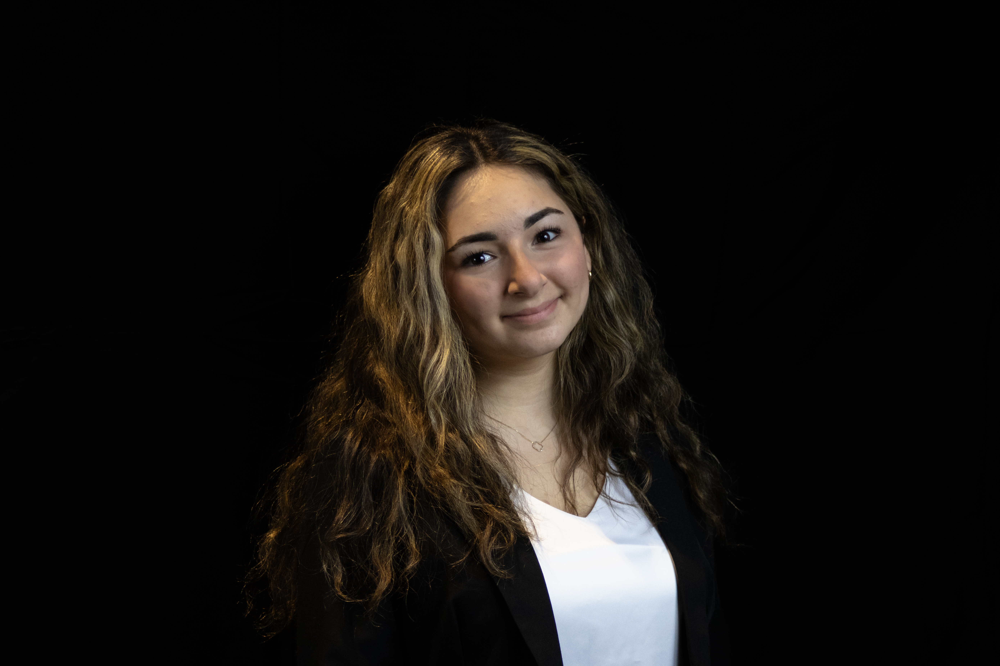
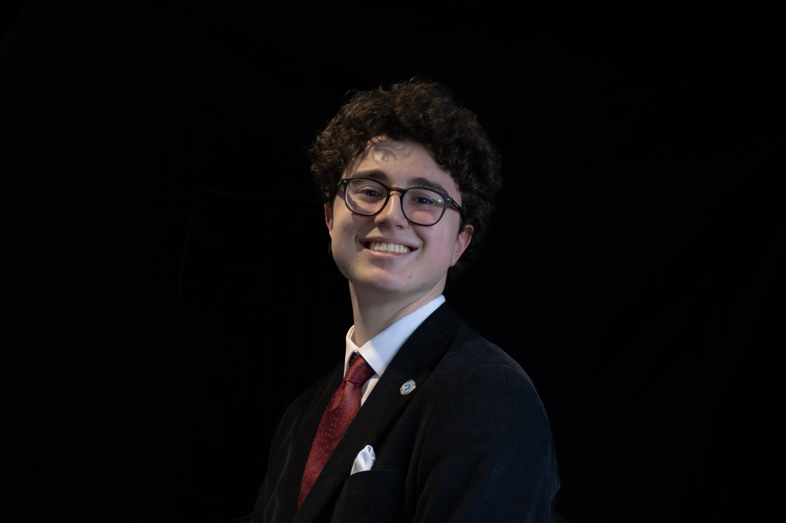
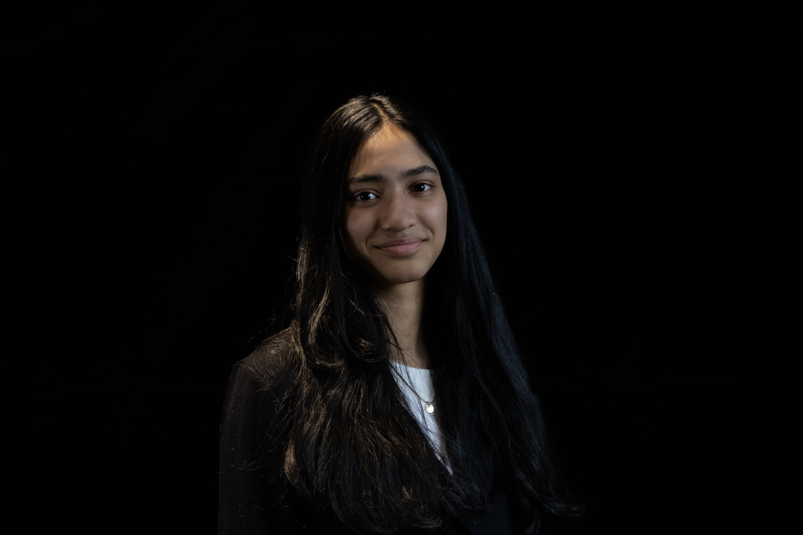
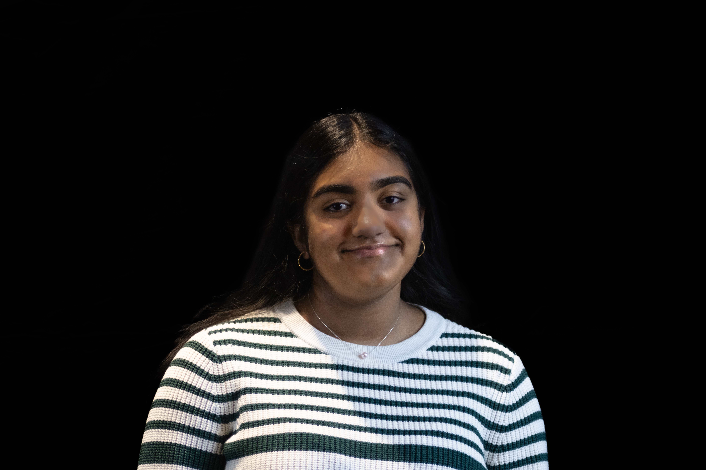

Our Secretariat
Explore our organization and the amazing people that make it all happen at Amity.

Secretary General
Alexandra Palcic
Alexandra is a current Amity sophomore and has been a part of Model UN since her first year in high school. She hopes to go into public service after college, and has a particular interest in international socioeconomic cooperation. Outside of politics, she enjoys reading, knitting, Dungeons & Dragons, and general nerdy stuff.

President/Co-President
Emma Imanov
Co-President Emma Imanov, a junior at Amity High School, has proudly led the club for the past two years. She has been actively involved in Model UN since joining as a freshman, serving as the club's Social Media Manager. Emma is passionate about diplomacy, global affairs, and public speaking, and she hopes to pursue a future career in law. She looks forward to welcoming delegates and helping facilitate engaging, well-organized committee sessions. Having attended numerous conferences herself, she is committed to creating an experience that is both challenging and memorable for all participants.
Meet the Chairs

Director of Committees
Luca DiSorbo
Director of Committees Luca DiSorbo is a sophomore at Amity who joined Model UN during his freshman year and serves as the club's Treasurer. With a passion for history, committee work, and diplomacy, Luca brings both dedication and experience to this conference. Outside of MUN, he enjoys reading, writing, and competing on the track team.

Director of Marketing/Design
Emma Mathew
Emma is a sophomore in high school and has participated in Amity's Model United Nations club for two years. Outside of academics she enjoys painting, playing the piano, and competing in mock trial. She hope to pursue a future in law or economics.

Director of Outreach
Srestha Kompalli
Srestha Kompalli is a sophomore at Amity Regional High School and has been a member of Amity's Model UN team for 2 years now. Club treasurer in her freshman year and secretary in her sophomore, Srestha is committed and passionate about Model UN. She also plans on pursuing a career in law. Outside of academic pursuits, Srestha enjoys reading, playing tennis, and listening to music. Srestha's enthusiasm for public speaking and civic engagement fuel her passion for hosting Amity's first model UN conference.

Director of Photography and Social Media
Theodore Anderson
Director of Photography and Social Media, Theodore Anderson, is a junior at ARHS in his first year of Model UN. He hopes to pursue a career in emergency medicine, but is separately interested in politics and social activism. Some of his hobbies include photography, classical guitar, and writing and editing for Wikipedia. His work can be found on Instagram @theodore_photo.
Club Advisor

Jennifer Brechlin
Faculty Advisor
Jennifer Brechlin serves as the dedicated faculty advisor for the Amity Model United Nations club, bringing years of experience in guiding students through diplomatic simulations and international affairs education. She is also an AP U.S. Government and Politics teacher.